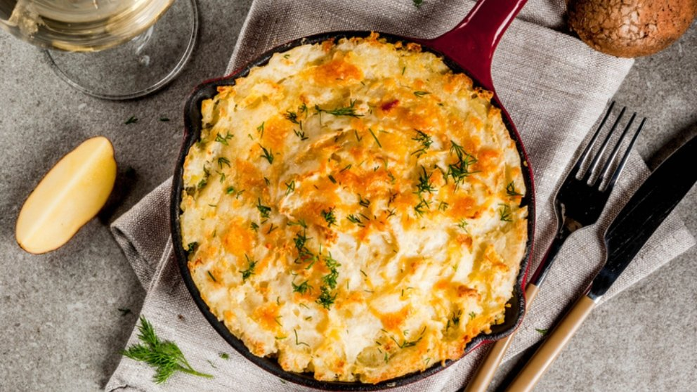

Recetas
Tarta de Pollo y Calabaza
Ingredientes
- 1 pechuga de pollo
- 300gr de calabaza
- 1 morrón o pimiento rojo
- 1 cebolla mediana
- 100gr de queso en hebras o mozzarella
- Sal y pimienta a gusto
- 1 masa de tarta
- 2 huevos

Preparación
- Comenzamos cortando la calabaza en rodajas y lo cocinamos en una fuente o a la plancha hasta que estén tiernas. Quitamos la cascara y hacemos un puré de calabaza.
- Cortamos la pechuga de pollo en cubitos y en una sarten cocinamos hasta que este dorado. Salteamos también el morrón y la cebolla cortados bien pequeño.
- En un recipiente mezclamos el puré, el pollo, las verduras, el queso y los huevos batidos. Integramos y condimentamos con sal y pimienta a gusto.
- En una tartera colocamos aceite y estiramos la masa. Colocamos el relleno y llevamos al horno precalentado a 180° por 15-20 min aproximadamente.